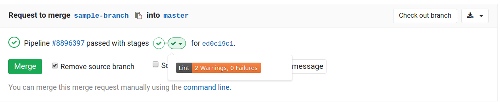

GitLab External Status Client

Add extra details to a GitLab CI pipeline.
Example
$(npm bin)/build-status shield --name "Lint" --desc "2 Warnings, 0 Failures" \
--shield-color "orange" Inline shield powered by TamperMonkey script 'Inline Shields.io'.
CLI Usage